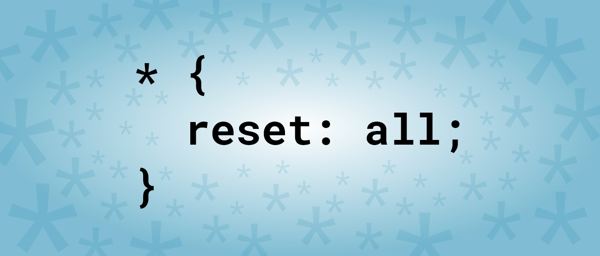
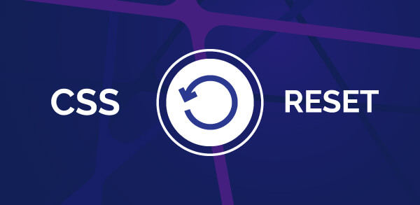

Cada navegador tem a sua apresentação por padrão e esse comportamento individualizado pode gerar conflitos de layout diante do seu projeto web.
E isso era um problema enfrentado por programadores e programadoras Front-end. Apesar de ser uma técnica *simples, chegar em consenso mínimo sobre como "forçar" todos os navegadores a terem o mesmo comportamento, não foi fácil.
Em 2007, o Eric Meyer (iremos falar dele mais a frente) em seu blog, levantou a discussão de como lidar com essas inconsistências dos navegadores e gerou uma grande discussão. Essas inconstâncias que os navegadores apresentam no momento de exibir ou renderizar elementos, podem ser sutis ou mais grosseiras, como, por exemplo, medidas diferentes para o margin superior e inferior em títulos ou a altura da linha padrão, o que poderá afetar profundamente as alturas dos elementos e alinhamentos.
Já sabemos que se trata de uma folha de estilo e que podemos usá-la como normalmente utilizamos folhas de estilo em um projeto web, seja dentro do arquivo HTML, seja num arquivo externo (e que poderá ser acessado por todos os demais arquivos).
VO mais habitual é que antes de se começar a estilizar o projeto, o arquivo reset css já seja adicionado para que seja feita a remoção da formatação original dos browsers.
Pois caso o reset CSS for adicionado no meio do projeto, por exemplo, pode gerar dores de cabeça já que o layout foi criado utilizando como referência a formatação dos navegadores e não na padronização dos elementos que foram resetados
